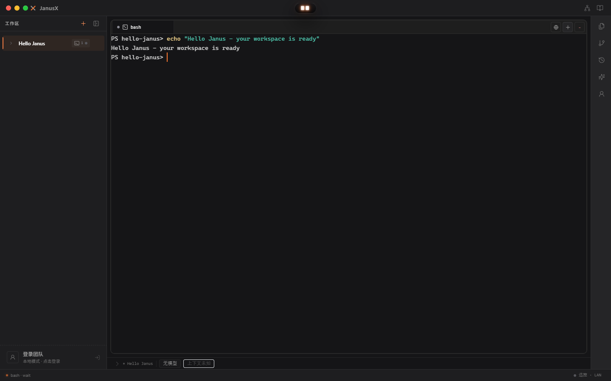
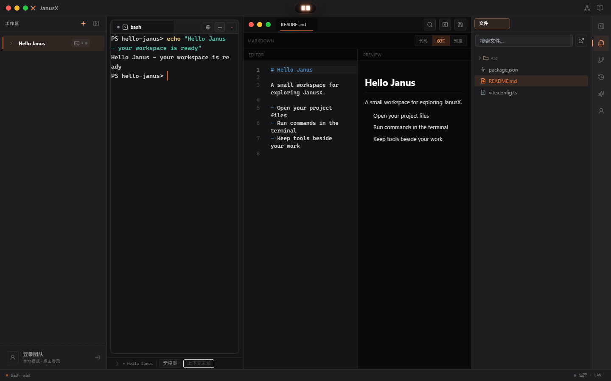
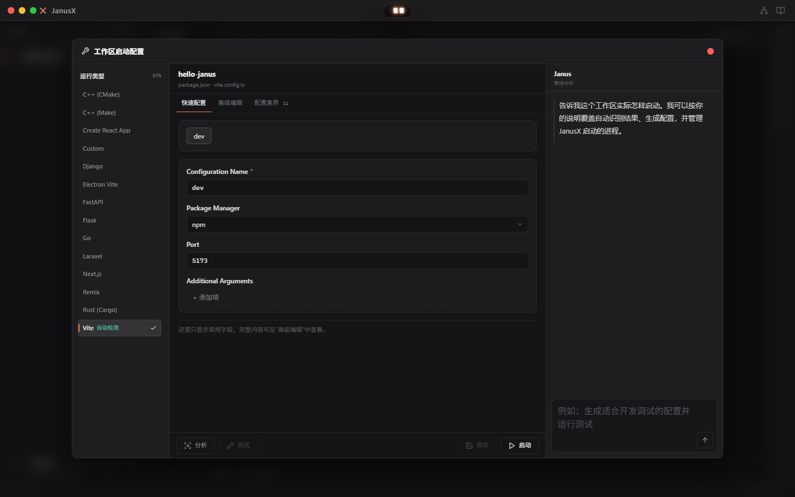

安装版
日常使用安装到你的电脑，自选安装位置，
创建桌面快捷方式。
DESKTOP WORKSPACE
项目、终端与 AI 编程助手，
在一个工作区就绪。
01 DOWNLOAD
安装包由 GitHub Releases 提供。版本信息加载期间，可前往发布页查看。
目前提供 Windows 下载。macOS 与 Linux 暂无公开安装包。
02 GET STARTED
日常使用选择安装版；希望直接运行，选择便携版。
运行下载的 .exe 文件。安装版按向导选择安装位置并完成安装。
打开本地项目，选择 Shell 开始工作。需要 AI 功能时，再配置模型提供商与 API Key。
03 INSIDE JANUSX
从打开项目，到运行命令、查看文件，把开发日常留在同一个桌面工作区。以下为 Hello Janus 示例项目的真实应用截图，点击图片可查看原图。
左侧切换工作区，中间运行 Shell 或 AI CLI，右侧工具栏随时打开文件与 Git 工具。

文件编辑器支持独立浮窗与嵌入主窗口。Markdown 的源码和预览并排显示，修改与阅读可以同时进行。

右键工作区打开「运行配置…」，查看运行设置与分析、测试、启动入口。实际运行需要项目自身的依赖和命令配置。

先体验本地功能：团队登录时可选「稍后再说，先用本地功能」，打开项目后选择 Shell。使用 AI 功能时，再配置模型提供商与 API Key；外部 CLI 需准备对应工具和登录配置。
选择 Windows 安装包 ↑在反馈中附上系统版本、JanusX 版本与错误信息。